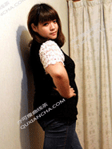

减肥,不仅是健康,更是自信!
用户：夏同学标签：学生 初始重>63kg 平台期 职业：学生 年龄：20岁 身高：163.0cm 初始体重：126.0斤（63.0kg） 目前体重：108.0斤（54.0kg） |
我今年读大二，五官端正，身高163公分，高中毕业时体重98斤。可是上了大学以后，因为课比较少，生活自由没有规律，经常大吃大喝，一度胖到118斤。 因为身材也算均匀，当时也没想着非减肥不可，而且听人说很多减肥药都很伤身。于是决定少吃饭，多运动。可还是管不往自己的嘴，后来胖到126斤，才觉得自己真正的是要减减肥。买衣服听到最多的一句话就是：“对不起，这个已经是最大码了”。我当时心里简直想找个地缝钻进去! 感觉世界一片灰暗，只想快点恢复到以前的身材。给自己制定了严格的减肥计划，每天早餐一杯豆浆，午餐吃半饱，晚餐一杯酸奶。坚持了6天，体重才降了二斤，我觉得已经坚持不了。每天感觉瘫瘫软软的，没有一点精神，宿舍同学都用怜惜的眼光看着我。有同学说只有消耗热量才能真正的减肥节食会营养不良，于是我决定采用运动减肥法。每天坚持跑步，运动，大概有
坚持2周差不多，实在是太辛苦了，我身心疲惫，坚持不下去了。 后来，同学给我推荐了一款纯天然的瘦身产品，听说很健康，我想试试也无妨。吃了1周后发现肚子明显小了，精神也好了，称了称体重，瘦了5斤。这也太容易了。后来又买了二个疗程的曲线茶，现在我只有94斤，真心感觉曲线茶。
顾问寄语：
肥胖的根本原因在于脂肪代谢力的降低，现代医学已将肥胖列为代谢性疾病。因此，提高代谢水平和代谢能力，是健康减肥的关键所在。曲线茶正是通过排除身体毒素，恢复身体正常代谢能力。这种纯天然减肥法，超越了运动、瑜伽的效果，又摒弃了激素药物的副作用。;其有效成份更能快速渗透皮下层快速消耗脂肪。快速去除脂肪堆积。
――米米
减肥，有努力就会有收获
用户：凉思标签：上班族 初始重>70kg 平台期 职业：秘书 年龄：23岁 身高：165.0cm 初始体重：121.0斤（60.5kg） 目前体重：103.0斤（51.5kg） |
有人比我更悲催的么?刚刚毕业工作就要加班的原因经常暴饮暴食，从白瘦美变成白胖美。一年下来，我的体重狂飙都超60kg了。特别是腰，搞得跟怀孕了一样。加上看起来比较成 熟，更没有男人缘了。后来步入减肥大军，经过打拼，总算减肥有成，也出来晒个贴，希望对MM们有帮助咯。 一直以为自己胖是因为吃太多，一个营养医师告诉我，吃太多确实会导致肥胖，但这并不是肥胖的主要原因。后来一个有点肉肉的朋友也在拼命减肥，而且还给我推荐了这个曲线 茶，说效果相当明显。因为之前有用过好几种减肥产品，心里有阴影了，所以那个时候打死我都没去用。只不过后来我还是买了，主要原因是我那个朋友一个月瘦了很多，而且那 之后也确实一直没有反弹。我还问她，她是不是为了不会反弹而节食，她说没有啊，吃喝按照平常的量就行了。我当时听得就有些心动了。心想反正没关系，试试好了。所以也买 了一个月的。
估计是因为成分很天然吧，吃了它倒也没什么不良的反应。只是感觉每天排毒次数多了，皮肤好像也有变好哦~很快一个月过去了，我感觉自己的“游泳圈”变小了，裤头松松垮垮的，哎呀，看来我也得系皮带啦!看东西效果还可以，吃得差不多了，我又继续下单。坚持了好2个月，看着体重降了9kg，学学曲线茶永远支持!
顾问寄语：
肥胖的根本原因在于脂肪代谢力的降低，现代医学已将肥胖列为代谢性疾病。因此，提高代谢水平和代谢能力，是健康减肥的关键所在。曲线茶正是通过排除身体毒素，恢复身体正常代谢能力。这种纯天然减肥法，超越了运动、瑜伽的效果，又摒弃了激素药物的副作用。;其有效成份更能快速渗透皮下层快速消耗脂肪。快速去除脂肪堆积。
――米米
宝妈逆袭,完美身材老公更爱!
用户：**宝妈标签：产后妈妈 初始重>65kg 平台期 职业：文员 年龄：26岁 身高：165.0cm 初始体重：130斤（70.0kg） 目前体重：104.0斤（52.0kg） |
~~2012年结婚不久就怀孕了，虽然当时正值事业刚起步阶段，但我还是决定生下宝宝。家里人就给我拼命吃呀吃，直到产后我体重都没有低过130斤，那形象简直没法看。生完宝宝家人又担心奶水不足，又是给我一个劲地补，就这样，生完孩子后的我还比最标准的时候重30斤。水蛇腰变成了水桶腰，仙鹤脚变成了大象腿，由一个小辣妈变成了大肥婆，呜呜~~ 在孩子断奶后，我开始实施疯狂的减肥计划。小姑姑提议运动减肥健康，每天早上五点钟我就准时出现在小区里跑得死去活来的，楼下的琳姐知道我的情况后给我推荐了曲线茶，并告诉我生了两个小孩的她就吃这个恢复小蛮腰的。琳姐说曲线茶边吃边“养瘦”还可以排出身体的毒素，让气色越来越好。我赶紧回家上网，原来曲线茶帮助很多产后妈妈恢复身材，中医汉方绿色健康.
使用一个星期后，我感觉自己睡眠好了，排便也通畅了，大概使用了半个月，我原本的大肚腩就瘪下去了不少，我整个心花怒放啊~~两个月用下来，现在穿性感的紧身裙，露出两条长长的美腿，想不辣都不行，鸡冻~~\(�R���Q)/~~，停用了一段时间后也没有反弹，真是妈妈们的福音呐，杠杠得推荐给JMS~~~
顾问寄语：
肥胖的根本原因在于脂肪代谢力的降低，现代医学已将肥胖列为代谢性疾病。因此，提高代谢水平和代谢能力，是健康减肥的关键所在。曲线茶正是通过排除身体毒素，恢复身体正常代谢能力。这种纯天然减肥法，超越了运动、瑜伽的效果，又摒弃了激素药物的副作用。;其有效成份更能快速渗透皮下层快速消耗脂肪。快速去除脂肪堆积。
――米米
老公成功减肥,身体果然"棒'了!
用户：张闻达标签：上班族 初始重>80kg 平台期 职业：销售 年龄：28岁 身高：175.0cm 初始体重：160.0斤（80.0kg） 目前体重：134.0斤（67.0kg） |
嘿嘿，下面来说下我老公的减肥成果，结婚的时候老公可还是个帅哥，也记不清老公是什么时候开始肥的，长期跟他在一起都没怎么察觉到。只是回老家时亲朋好友都说他胖了，拿起以前照片一对比，再一称体重，老公竟然在半年时间胖了近30斤。 可能是因为结婚了没怎么控制，也可能是他做销售喝酒比较多，所以肚子越来越大，给他买裤子腰都要大2个码。老被人说老公也开始觉得自己胖了，再加上我的危言耸听：胖了会得三高啊。他也答应我开始减肥，说尽力去做，我开始控制老公的饭量，监督他饭后不能立即坐下。
老公一有空就让他去打球，出门上街爬楼梯让他背重物等等。但这些小方法的效果微乎其微。于是我开始在网上搜刮各种不伤身的减肥方法。根据我多年网站工作的经验，果断选择曲线茶，完全没有副作用瘦身效果也非常好，再配合运动，比那些节食什么的靠谱多了。曲线茶是排毒加瘦身。买了这款产品后，每天督促老公准时吃，肚子大概小了1个指头宽的腰围，脸部的双下巴也消失了一些，不过还是需要继续努力。在我的严厉督促下，老公辛苦的坚持了下来。
顾问寄语：
肥胖的根本原因在于脂肪代谢力的降低，现代医学已将肥胖列为代谢性疾病。因此，提高代谢水平和代谢能力，是健康减肥的关键所在。曲线茶正是通过排除身体毒素，恢复身体正常代谢能力。这种纯天然减肥法，超越了运动、瑜伽的效果，又摒弃了激素药物的副作用。;其有效成份更能快速渗透皮下层快速消耗脂肪。快速去除脂肪堆积。
――米米
曲线茶，真棒！
用户：吴女士标签：经理 初始重>64kg 发胖期 职业：部门经理 年龄：35岁 身高：163.0cm 初始体重：128.0斤（64.0kg） 目前体重：106.0斤（53.0kg） |
紧张与忙碌几乎成了生活的全部，而饥一顿、饱一顿更是在所难免，麦当劳与方便面便是我们的每日菜单。就这样，在不知不觉中，小肚子越来越鼓，走起路来腿上的赘肉也会发颤。嗨，都是忙碌惹的祸! 一次偶然的机会，看到曲线茶的广告。被它那种100%纯天然，无任何副作用的魅力所吸引了，喝了大概10天，就开始看到讨厌的肚腩缩水了。这中医汉方减肥法不仅能清脂排毒，还没有一点不适的感觉，幸运的是让我认识了它，成了它忠实的朋友，它让我瘦得健康自信。
顾问寄语：
肥胖的根本原因在于脂肪代谢力的降低，现代医学已将肥胖列为代谢性疾病。因此，提高代谢水平和代谢能力，是健康减肥的关键所在。曲线茶正是通过排除身体毒素，恢复身体正常代谢能力。这种纯天然减肥法，超越了运动、瑜伽的效果，又摒弃了激素药物的副作用。;其有效成份更能快速渗透皮下层快速消耗脂肪。快速去除脂肪堆积。
――米米
我变美后，男友的180度转变
用户：周书宜标签：上班胖 初始重>67.5kg 上班胖 职业：文秘 年龄：24岁 身高：164.0cm 初始体重：135.0斤（67.5kg） 目前体重：106.0斤（53.0kg） |
刚和男盆友在一起时我们很恩爱，虽然我是一个135J的胖子，后来他们朋友之间老拿我的身材调侃他，弄得他也有点介怀了。果然，肥胖还是成了我们感情的致命伤!在难过了几天后，我下决心要改变，要减肥! 作为一名标准网虫，起初逛了无数的论坛和贴吧，尝试了各种减肥办法，节食、运动、针灸、中药、各种减肥茶……结果不是体重完全没变化，就是身体遭殃，就在我打算放弃的时候，在和闺蜜男盆友的朋友的女性朋友的聊天中，我们竟然得知这个苗条女生之前非常胖!我最记得她对我说，“就跟你现在差不多!”天啊!她告诉我她用过服用了一款曲线茶的产品。她说自己之前也是听朋友介绍，然后网购回来开始服用。“就是通过加快代谢和排毒来瘦，反正到现在我没发现什么副作用。”我毫不犹豫也上网订购了纤体一号。
坚持了一段时间，我发现自己的大脸真的有小，连双下巴也神奇地消失了，变成了鹅蛋脸!哈哈~又是一段日子后，我彻底瘦到了自己想要的身材~出门逛街的时候心情都截然不同了。现在出门就算路人看我，我都会想他们一定是在羡慕我的好身材!男盆友也在微博上看到了瘦身成功的我，居然在断联十个月后给我发信息，说要跟我复合。这个世界上，果然只有又瘦又美才是王道!
顾问寄语：
肥胖的根本原因在于脂肪代谢力的降低，现代医学已将肥胖列为代谢性疾病。因此，提高代谢水平和代谢能力，是健康减肥的关键所在。曲线茶正是通过排除身体毒素，恢复身体正常代谢能力。这种纯天然减肥法，超越了运动、瑜伽的效果，又摒弃了激素药物的副作用。;其有效成份更能快速渗透皮下层快速消耗脂肪。快速去除脂肪堆积。
――米米